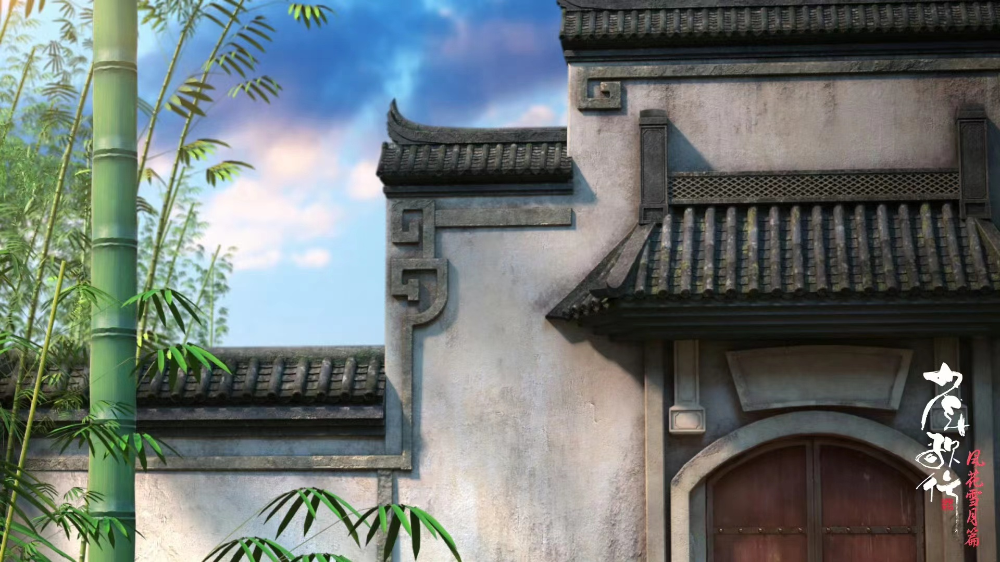
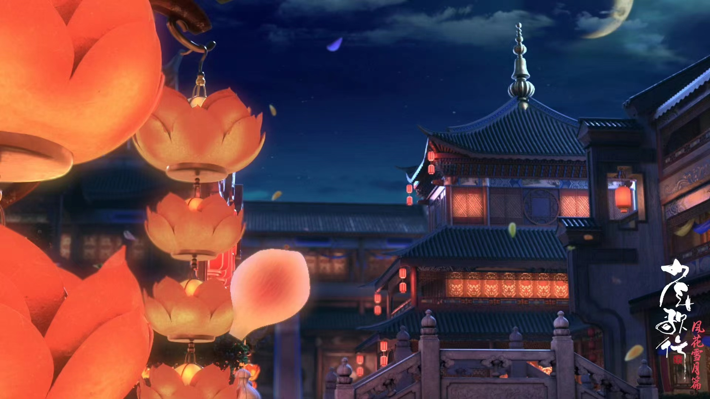
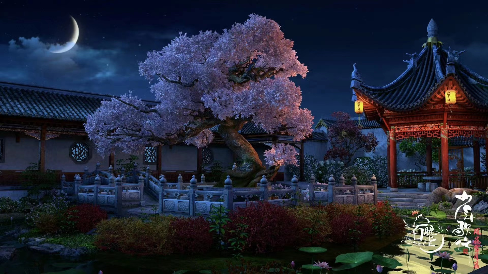

- 
- 
-
武功境界
由百晓堂堂主姬若风所评，以一品境界划分天下武人。一品之下只算得武夫，一品之上才算高手。而一品又分四境。
第一境金刚凡境，练成之时，不取六尘万法，无坚不摧。
第二境自在地境，心若自在，地上无敌。
第三境逍遥天境，以天道为武力，一刀一剑有万物呼应。武功为这个境界的有白发仙、被废武功之前的萧瑟还有几位剑仙等。
第四境神游玄境，只在传说之中，可静坐闭目，神思却畅游万里之外
截止到少歌结局，世间尚存且完整达到此境界的仅有三位：莫衣、百里东君、洛青阳。
-
十大名剑
由剑心冢列剑谱评定的天下名剑。
剑谱第一，天斩。天下第一剑，天道之剑，非天命之人不能持。常年供于钦天监，国师齐天尘守之，后成为萧瑟佩剑。
剑谱第二，大明朱雀。其剑为无双城镇城之宝，藏于无双剑匣之中，剑意锋锐，出剑必见血可返，其为无双城城主无双所配。
剑谱第三，铁马冰河。其剑乃世间至寒之剑，原封于昆仑山巅，曾为绝世昆仑剑仙所配，后为雪月剑仙李寒衣所持。
剑谱第四，心。唯一以单字为名的剑，剑可同灵，与剑主心意相同，剑意纯粹可断凡剑剑意，其剑为剑心冢历任传人佩剑，后传给年轻冢主雷无桀。
剑谱第五，破军。其剑钝而厚重，非天生神力不能舞，称王霸之剑，怒剑仙颜战天佩其剑。
剑谱第六，青霄。其剑乃青城山镇山之宝，历任掌门佩剑，含道家至理，曾传青城山掌教赵玉真，后传予李凡松。
剑谱第七，动千山。其剑剑气浩瀚无比，一剑起，动千山，起万潮，十大名剑中唯一当年铸剑师所铸之剑，现持有人为沐春风。
剑谱第八，昊阙。其剑可称人间正气第一剑，原为北离大都护琅琊王萧若风所佩之剑，萧若风死后佩剑藏于天启城天剑阁，有剑奴守之，后由萧凌尘取走。
剑谱第九，霜雪。剑乃雌雄双剑，秋之霜冬之雪，单剑平凡，可双剑合壁却有神威，现传人不知。
剑谱第十，无忧。其剑莹白如玉，剑身修颀秀丽，不似人间之剑，隐隐有飘然仙风，现传人不知。
-
金榜第二榜，名良玉榜
只有各门各派的年轻弟子能够入榜，不过八个名额，十分之珍贵
并且若是生辰过了二十五，就没有机会再入榜了
所以是曾经每一个少年英雄们无比渴望的榜
当年的雷轰、雷云鹤、李寒衣、司空长风、百里东君都位列良玉榜。 -

金榜第三榜，名冠绝榜
这份榜单的意思，就是冠绝天下
冠绝榜一共分四甲，第四甲四人，三甲三人，二甲二人，首甲一人
能入这冠绝榜，便是真真正正的金榜前十了
海外仙人莫衣为冠绝榜封榜多年重现江湖后的首甲
酒仙百里东君和孤剑仙洛青阳紧随其后位列二甲
后来仙人闭世，百里不归
洛青阳得入首甲